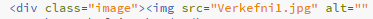
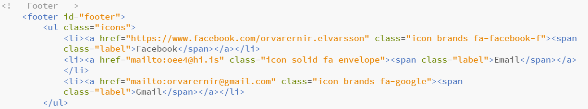
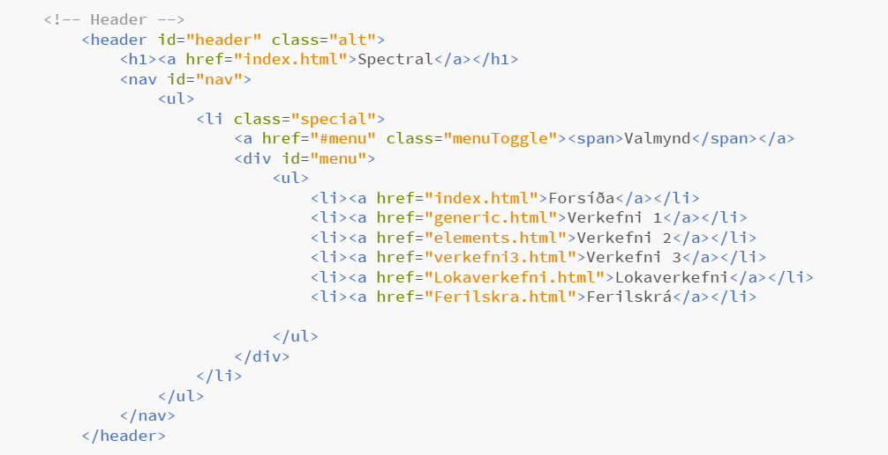
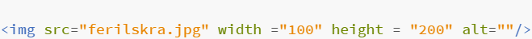
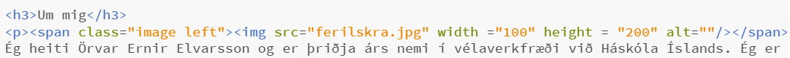
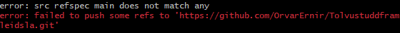
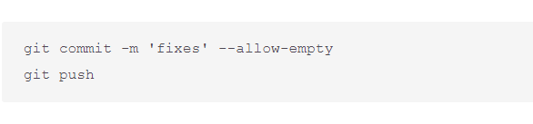

Verkefni 1: Vefsíða
Tölvustudd framleiðsla (Vél608G)
Á hverju byrjaði ég?
Ég byrjaði á því að skoða vefsíður hjá nemendum fyrri ára til þess að fá tilfinningu fyrir verkefninu. Ég skoðaði mest verkefnin hjá Björg Evu, Sæmundi og Aroni Beck, þar sem mér fannst þau útfæra þetta vel. Næst fór ég inná https://html5up.net/ þar sem maður getur hlaðað niður html sniðmátum. Eftir að hafa skoðað nokkur sniðmát þar ákvað ég að nota sama sniðmát og hann Sæmundur notaði, vegna þess að mér fannst það líta vel út og snyrtilega uppsett. Sniðmátið heitir Spectral og má finna hér Spectral. Mér datt svo í hug að reyna finna önnur gömul verkefni hjá nemendum sem höfðu notað þetta sniðmát, til þess að fá betri tilfinningu fyrir því hvernig væri best að setja upp vefsíðuna. Ég fann verkefnið hans Gunnars Jarls en hann hafði einmitt líka skoðað verkefnið hans Sæmundar. Það síðasta sem ég gerði áður en ég fór að vinna í minni vefsíðu var að horfa á kennslumyndbönd frá kennara.
Forsíða vefsíðunnar
Það fyrsta sem ég gerði við gerð vefsíðunnar var að opnað index.html í forritinu "brackets" eins og sýnt var í kennslumyndbandinu. Ég tók út þann kóða sem ég vildi ekki hafa á minni vefsíða og breytti nöfnum og titlum. Ég setti inn mynd af bút úr kóðanum, en þá tók ég einfaldlega skjáskot, skírði myndina "Verkefni1" og setti það nafn í staðinn fyrir nafnið á myndinni sem var í upphaflega sniðmátinu. Það leit þá svona út:

Neðst á síðunni er svo að finna hlekki til þess að geta nálgast mig en þar tók ég bara út það sem ég vildi ekki hafa, skildi eftir HÍ netfang og facebook og bætti við gmail.

Valmynd
Í sniðmátinu var að finna þrjár html skrár, index.html, generic.html og elements.html. Þær gat ég notað fyrir forsíðu, verkefni 1 og verkefni 2, en ég vildi bæta við síðu fyrir verkefni 3, lokaverkefni og ferilskrá. Til þess að fá það afritaði ég generic skrána og breytti nöfnunum í verkefni3.html, Lokaverkefni.html og Ferilskra.html. það var nú þegar kóði fyrir valmynd í sniðmátinu, þ.a. eina sem ég þurfti að gera var að breyta í viðeigandi nöfn og þá var valmyndin klár, sjá á mynd fyrir neðan.

Textagerð og hlekkir
Til þess að setja upp texta eins og þennan sem hefur verið skrifaður þurfti ég einfaldlega bara að setja minn texta inn í stað textans sem var í upphaflega sniðmátinu og síðan afrita það þegar ég þurfi að bæta við fleiri köflum. Ég googlaði aðeins um þetta og þetta hér hjálpaði mér að sjá þetta betur fyrir mér.
Þegar það kom að því að setja inn hlekki í textann þurfti bara einfalda google leit og þetta hér sýnir hvernig maður getur setur inn hlekk á snyrtilegan hátt. Að auki kunni ég ekki að setja inn auðar línur í textann, þ.a. aftur leitaði ég á google og inná þessari síður hér var einstaklingur sem kallar sig "auxclass" með lausn á því.
Við gerð á ferilskránni var ekki mikið vesen nema það að skala myndina mína og að setja texta við hliðina á myndinni. Til þess að finna hvernig maður skalar myndina notaði ég google og þetta hér sýndi mér hvernig það væri hægt. Ég þurfti bara að stilla "width" og "height" eins og má sjá á myndinni hér fyrir neðan.

Svo til þess að setja texta við hliðina á mynd skoðaði ég leiðbeiningar hjá Sæmundi, en hann notaðist við skipunina "span" og virkaði hún vel.

Uppsetning á Github
Þegar að það kom að því að hlaða upp síðunni á github nýtti ég mér kennslumyndbönd kennarans, en ég fór í rauninni bara í gegnum þau skref fyrir skref. Ég notaðist við git bash og skipanirnar sem eru sýndar í myndböndunum en ég fékk upp eftirfarandi villuskilaboð:

Ég sá þá að Sæmundur hafði lent í sama veseni en hann fann lausn frá Jin Kwon sem virkaði vel:

Eina sem var þá eftir var að fara í stillingar á github repositoryinu og breyta "source" úr "none" í "main".
Hvað víl ég fá úr áfanganum og hvað vil ég gera sem lokaverkefni?
Það helsta sem ég vil fá út úr áfanganum er að læra eitthvað nýtt. Þegar ég skoða kennsluáætlun lítur út fyrir að það sé ýmislegt nýtt og áhugavert tekið fyrir í áfanganum og er ég því vongóður um það að ég muni fá að kynnast einhverju nýju og gagnlegu. Þar sem áfanginn er nýbyrjaður er ekkert sem mér dettur í hug núna sem ég vil gera í lokaverkefninu en þegar það hefur liðið aðeins á áfangann finn ég vonandi eitthvað sem mig langar að gera.